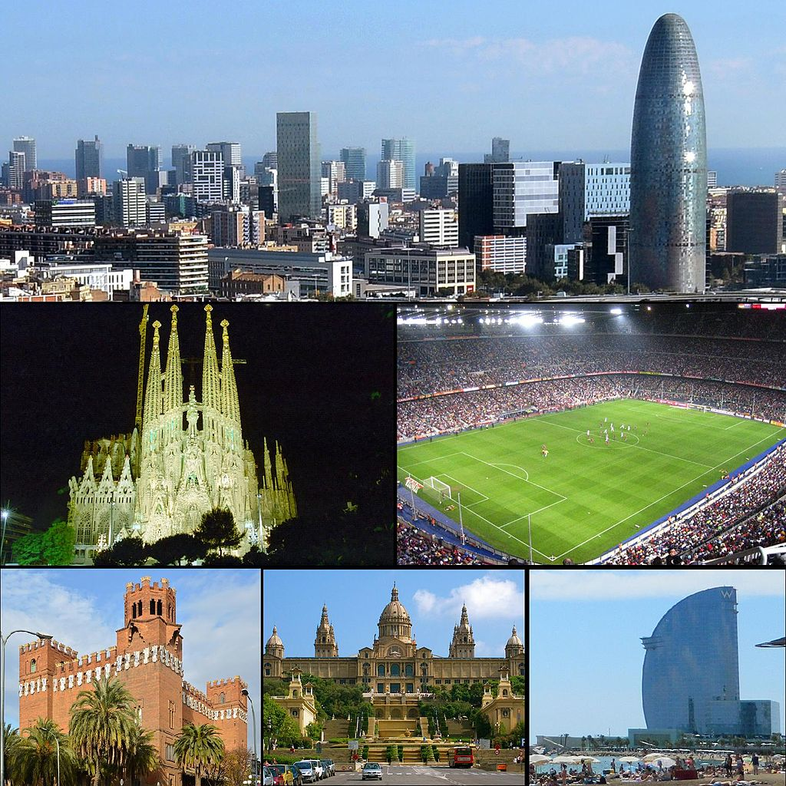

| Abitanti | Temperatura | Attrazioni |
|---|---|---|
| 1,62 milioni i | mediterraneo | per quanto riguarda il turismo |
| Vivere a Barcellona offre sicuramente una buona qualità di vita e vantaggi importanti rispetto a molte altre città italiane o europee, ma il mito della città accogliente, che offre lavoro e movida a tutte le ore e permette a chiunque di vivere con poco, be', è un mito, appunto. | Il clima di Barcellona è tipicamente mediterraneo, con estati calde e inverni miti. Qui le temperature difficilmente scendono sotto gli 8-10 gradi in gennaio e febbraio, i mesi più freddi, mentre la media per l'estate è di 25º | A Barcellona si ha la possibilità, percorrendo a piedi le strade, di trovare tracce della sua storia millenaria, dalle rovine romane e della città medievale fino ad arrivare ai quartieri del modernismo catalano, con i suoi edifici caratteristici, i suoi isolati quadrati, i suoi viali alberati e le sue strade larghe. La città antica sorge pressoché in pianura, mentre i quartieri più recenti acquisiscono maggiore pendenza man mano che ci si avvicina alla catena di colline retrostante. alcuni esempi del modernismo sono gli edifici del Quadrat d'Or nel quartiere dell'Eixample, le opere di Antoni Gaudí e il Palau de la Música Catalana di Lluís Domènech i Montaner, dichiarato nel 1997 patrimonio dell'umanità dall'UNESCO e situato nel quartiere di Sant Pere, accanto a Via Laietana. Non meno importanti sono i contributi architettonici, sempre d'impianto modernistico, di Josep Puig i Cadafalch. |
Capoluogo della Catalogna, una comunità autonoma della parte orientale dello Stato,È situata nella Spagna orientale, sul mar Mediterraneo a sud della catena montuosa dei Pirenei e 150 km dal Colle del Perthus, che segna il confine con la Francia, in una pianura situata tra il mare e la suddetta catena montuosa, tra le foci dei fiumi Besòs e Llobregat. Il comune è delimitato a nord dai comuni di Santa Coloma de Gramenet e Sant Adrià de Besòs, a ovest da Montcada i Reixac e da Sant Cugat del Vallès, a sud dalla zona franca con L'Hospitalet e Esplugues de Llobregat, ù mentre a est dal Mar Mediterraneo I rilievi della città possono venire divisi in tre sezioni distinte: i monti della Collserola, con il Tibidabo come maggiore cima (516,2 m) a dominare la città con il suo parco dei divertimenti; la pianura; il delta del Besòs e del Llobregat perpendicolari alla costa. Altre vette minori emergono dalla piana litoranea, la più conosciuta delle quali è il Montjuïc (184,8 m), collina nei pressi del porto dominata da una fortificazione.
